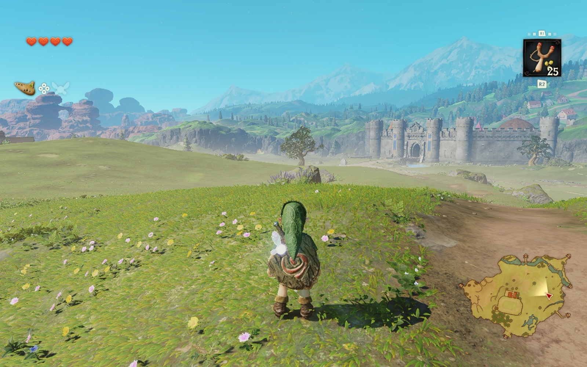
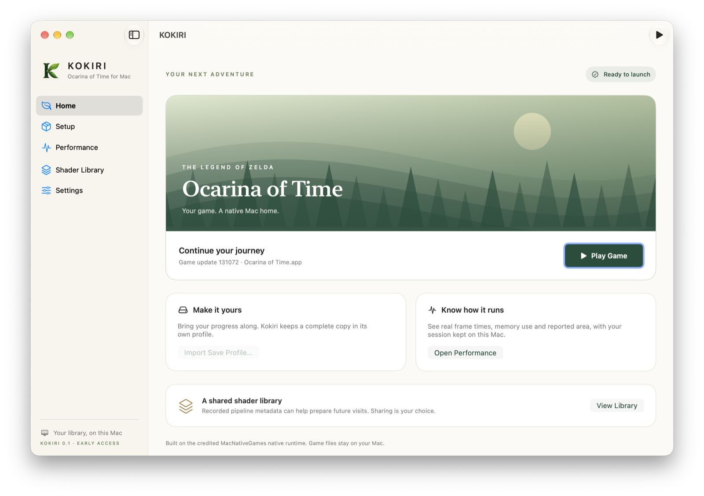

Kokiri · Development preview
Ocarina of Time
for Mac
The Switch 2 edition running natively on Apple silicon, with a custom menu and configurable performance HUD.
Customize the HUD.
Try the position, size and detail controls below. This is a web preview of the options available in Kokiri.

Interactive web preview · Sample HUD values, not a benchmark. Backgrounds are earlier runtime test captures from November 14, 2026.
A native Mac app.
Launch a compatible game build, import a copy of your save profile, and inspect session statistics in a SwiftUI app.
- Save import
- Import a complete copy of your save profile. Your original stays where it is.
- Session statistics
- Inspect local memory use and optional frame timing, with dated recordings.
- In-game settings
- Change HUD size, detail and placement through Kokiri’s custom in-game menu.

An open shader catalog.
We’re building an open shader and pipeline catalog so compatible projects can share preparation metadata, with your choice to contribute.
-
On your Mac
Record recipes
Record the pipeline recipes your runtime encounters.
-
Shared metadata
Opt in to sharing
Share validated recipes. Keep game files, saves and shader code local.
-
Compatible builds
Build local caches
Use matching metadata to build a cache for your own graphics backend.
Public reference catalog. 29,796 signed metadata recipes are available. Compiled shaders stay on your Mac; compatibility and gameplay validation are ongoing.
Read the protocolBuild Kokiri.
Source builds are for contributors using their own game files. Full v28 preparation remains incomplete, with no accepted playable package from the current full build.
Build from source- Hardware
- Apple silicon Mac
- Software
- macOS 26 + Xcode
- Game
- Switch 2 edition · update 131072
Which version of Ocarina of Time?
Your own Nintendo Switch 2 dump of title
0400486024DEC000, update 131072, with
required shared firmware fonts. N64 and Nintendo 3DS ROMs are not
supported. No game files are included.
Can I download a finished app?
There’s no stable, notarized release or accepted current full-v28 package yet. The source guide covers the native launcher and a private game runtime. Production feeds, signing and actual game update/relaunch acceptance remain pending.
How well does it run?
Whole-game performance is unverified. Severe FPS drops, compilation stalls and high memory use remain unresolved. The latest v28 user playtest reported no rendering corruption; broader visual checks and full shader preparation remain open. See the measurement notes for evidence and limits.
How can I help?
Test repeatable routes, report your Mac chip, RAM, build, resolution and cache state, or contribute code and catalog adapters. Start with the contribution guide. Keep game files and private data out of reports.
Development
Source, updates and bug reports are on GitHub.